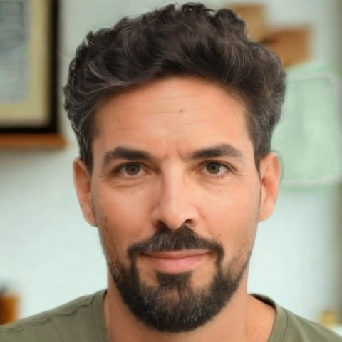

מטרת המחקר
בישראל קיים היום מגוון רחב של דרכים לקבל תמיכה בתחום החוסן הנפשי, במיוחד מאז מלחמת חרבות ברזל: טיפולים פסיכולוגיים, טיפולים משלימים, מרכזי חוסן, וגם מסגרות חברתיות כמו קבוצות ריצה ומעגלי גברים.
ובכל זאת, גברים רבים לא משתמשים באפשרויות האלה. ממצאים רבים (בין השאר דו״ח מבקר המדינה, קופות החולים, מחקר שערך המגזין כלכליסט ומ־Polly Labs) מצביעים על כך שהצורך גדול, ועם זאת רבים לא פונים לעזרה, גם כשהיא זמינה להם.
אני מתעניין במיוחד בגברים בני 28 עד 35, בפרק חשוב בחיים. אני מבקש להבין איך הם מתמודדים עם קושי, מה הם מרגישים שחסר להם, ומה מרחיק אותם מעזרה שכבר קיימת.
למה זה חשוב, ולמי זה יועיל
גברים רבים מרגישים שהם זקוקים לתמיכה, ובכל זאת לא פונים לאף אחת מהאפשרויות הקיימות. כל עוד לא מבינים מדוע, קשה לבנות מענה שבאמת יעזור להם.
במקום להסתפק בהנחות, אני מבקש לשמוע ישירות מהגברים עצמם, במילים שלהם, אילו צרכים ובעיות נשארים היום בלי מענה, ואיך הם משפיעים על החיים: בבית ובמשפחה, בזוגיות ועם הילדים, בעבודה, באנרגיה ובחדוות החיים. אני מבקש להבין גם מה מרחיק אותם מהאפשרויות הקיימות, ומה היה עוזר להם באמת.
על סמך זה אפתח מסגרת תמיכה לגברים בני 28 עד 35, כזו שמתחשבת במה שמרחיק אותם מעזרה היום: עלות, קושי להגיע אליה, והתחושה שלבקש עזרה זה חולשה. המרוויחים הראשונים הם הגברים עצמם. אבל כשגבר מקבל תמיכה, זה מורגש גם אצל בן או בת הזוג, במשפחה ובסביבה הקרובה.
את מי אני מראיין
אני מראיין גברים בני 28 עד 35 החיים בישראל, כולל מי ששירתו במילואים בשנים האחרונות. מתאימים גם מי שמרגיש שהוא מסתדר טוב, וגם מי שמרגיש שקשה לו.
השיחה רלוונטית בייחוד למי שניסה אחת מהאפשרויות הקיימות והפסיק, ולמי שלא פנה אליהן מעולם. שניהם מעניינים אותי.
עם מי כבר דיברתי, ומה שמעתי
עד היום שוחחתי עם 19 גברים. הנה מה ששמעתי שוב ושוב, בלי שמות ובלי פרטים מזהים.
רובם גברים מתפקדים ומוערכים, שמרגישים בשקט שהם לא במיטבם. רבים כבר ניסו טיפול, קורסים או ריטריטים, ומה שחסר להם הוא לא עוד תובנות אלא משהו שעוזר להם לפעול באמת, ברגע הקשה.
רבים סיפרו שהם מתחילים לזוז רק כשמגיע משבר, והיו רוצים שאפשר יהיה להתחיל מוקדם יותר. ושירות המילואים עלה בשיחות רבות, גם כשלא שאלתי עליו.
מה קורה בשיחה
השיחה נמשכת כ־45 דקות, בזום. אני שואל על הניסיון האישי שלך: מה אתה עושה כדי להתמודד עם קושי, אילו אפשרויות תמיכה ניסית או שקלת, מה עצר אותך, ומה היה עוזר לך.
זו שיחה של הקשבה ולמידה, ולא שיחת מכירה או שיווק, ואין בה שום מחויבות מצדך. מה שאלמד ישמש אותי כדי לפתח תמיכה שמתאימה באמת לגברים.
מי אני
אני גדי ספרוקט, בוגר פילוסופיה מאוניברסיטת תל אביב ובעל תואר שני מ־Central Saint Martins בלונדון.
בשנים 2017–2026 הייתי מנחה בכיר ומוביל תוכניות ב־Choose Again ובמרכז הריטריטים El Cielo בקוסטה ריקה, חבר בהנהגת המרכז, ועד מרץ 2026 גם ניהלתי אותו. הנחיתי יותר מ־500 אנשים בפגישות אישיות, במעגלים ובריטריטים. לפני כן, בשנים 2013–2017, חייתי כתלמיד בבית ספר ליוגה בקוסטה ריקה, מהן שנתיים וחצי באשרם מרוחק. בסך הכול 12 שנים בקוסטה ריקה, ויותר מ־25 שנות מדיטציה וחקירה עצמית.
במקביל אני שותף מייסד של Mumbojumbo, חברת לוקליזציית מדיה לשידור שהוקמה ב־2005. היום אני גם מנהל השיווק של Choose Again, ומנחה ומאמן קבוצות ויחידים אונליין.
מה תקבל מהשיחה
בשבילך: שיחה כנה על מה שעובר עליך, עם מי שמקשיב ולא שופט ולא מנסה למכור לך דבר. לא לכל גבר יש מקום לשיחה כזו, וההזדמנות לעצור ולחשוב בקול על איך אתה מתמודד שווה משהו בפני עצמה.
בשביל אחרים כמוך: מה שתספר משפיע על מה שייבנה בהמשך. אם נדמה לך שאין היום תמיכה שמתאימה לך ולגברים כמוך, זו הזדמנות להשפיע על כך.
פרטיות
אני מקליט ומתמלל את השיחה לצורך המחקר בלבד, ורק בהסכמתך. בניתוח ובכל שימוש בממצאים לא יופיעו שמות או פרטים מזהים, ואפשר לבקש ממני למחוק את ההקלטה.

הזמנה לשיחה עם גדי ספרוקט
אם זה מעניין אותך, אפשר לקבוע איתי שיחה בזמן שנוח לך.
לקביעת שיחהיש שאלה לפני כן? אפשר לכתוב לי בוואטסאפ: 050-456-1884